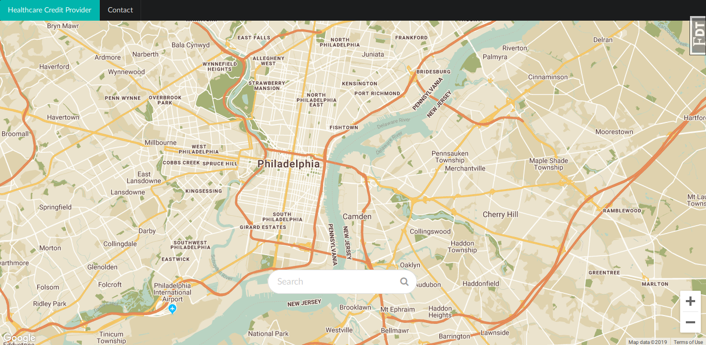

April 25, 2017
I am a Mathematician turned Computer Scientist at Rutgers University. I'm extremely passionate about Mathematics. However, in the recent times I have observed that Mathematics is written in form of a code and applied in real world, it can do wonders. Here is a little snippet of that!


Being a Mathematician this was the first applied mathematics project I could think about. This C++/ Python based simulation isn't just marvelous to look at, but explains the game of life.

The project is to let customers locate health credit providers around them. Project based one of my teamates Flask Boiler Plate maintained at hXtreme/flask-boilerplate

Simple physics project to plot the paths of a cannonbal with and without air-drag

A simple shell in C.Executes basic commands like cd, pwd, clear, exit. The programs are invoked using forking and child processes. Use of dup2 for the following:pipe and dup2 for multiple piping